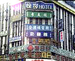

呂清夫 撰文

世間很多東西可以載舟，也可以覆舟。就以都市中的廣告招牌來說，架設得當，固然可以帶來商機，甚至營造趣味，但是廣告物如果太過強勢，喧賓奪主，那麼都市景觀就要隨之遭殃。你如果在台北城中區走一圈，你會發現，你幾乎感覺不到任何的歷史軌跡、或典雅的風致，因為每一棟建築物都被改建得亂七八糟，而強力刺激眼睛的是一片廣告招牌的洪水，每一塊市招都想蓋過別人的招牌，讓你幾乎透不過氣。這種情況不僅台北、在全台灣都可以看到。我們在台中公園的抗日紀念碑之旁、在墾丁的國家公園之中，同樣可以看到廣告物的猖獗，至於房地產的廣告，甚至把整條街、安全島都拿去做廣告，所以到處是廣告旗海、到處是售屋指標，讓人幾乎看不出那是哪條街。還有那無孔不入的廣告貼紙，更要勞駕市長來「向小廣告宣戰」。難怪最近的一項民意調查中，顯示台北市民對於新近的廣告物法規相當不滿意。雖然法規本身訂得密密麻麻，但是有八成三的民眾還是認為政府管得太少或者沒管。同時有七成以上的民眾認為還有五項管理需要加強，它們不外是住宅與綠地的廣告物管理，大家希望住宅區與商業區的廣告物應該分區管理，訂定不同標準，同時住宅區要限制霓虹燈、閃光燈的廣告。大家並要求風景區幹道兩旁、公園、綠地、河岸都要限制廣告物。在國外，廣告物的管理更加嚴苛。如法國、德國、日本都規定，住宅區不得設置廣告物。法國更規定古蹟一百公尺以內禁設廣告物，同時國家公園、自然保護區、所有的公有樹木，也都是廣告禁地。德國的非商業區、公共綠帶、郊區，也都有同樣的規定。日本更禁止農業區、森林區設立廣告，最嚴格的東京都不說，一般鄉鎮都規定一大堆禁設廣告的地點，如隧道、橋樑、安全島、行道樹、交通信號、道路標誌、路燈、電線桿、電話亭、變電箱、紀念碑……約三十項通通是禁地，因為這些都是公共財產，沒有理由隨便供人做廣告。在台北市新修訂的法規中，只限制電線桿、橋樑、樹木不得任意張貼廣告，但可經過申請而獲准。至於其他類的廣告物則規定，高地、公園、綠地、名勝、古蹟不得設置，但經主管機關核准者，不在此限，故相當有彈性。對於住宅區的霓虹燈雖有設限，但如建築物面臨的是五十米寬的道路，則又不在此限。所以我們可以看出，台灣的法規包括內政部的母法「廣告物管理辦法」，都對住宅區沒有強力規範，甚至網開一面，對於公共綠帶亦復如此，難怪我們的生活空間會亂成一團。另外，這些寬鬆的規定如果碰到民不守法、官不執法，也是白搭，例如我們雖然規定「廣告物不得封閉或堵塞建築技術規則規定設置之各種開口部」（這種規定實在詰屈熬牙，德國人則簡單明瞭地說，「廣告物不得遮蓋建築物開口部的一部或全部」），可是多次的火災都因為廣告全面封住了窗戶，而使民眾逃生無門。至於碰到颱風，更有不少廣告物嚴重威脅了行人的安全，因為我們廣告物實在太大太重了。我們的廣告物法規第一條就說要「維護公共安全」，這雖然顯示了法規本身的基本精神，但是碰到這個節骨眼反而充滿無力感。反觀法國、德國、日本的基本精神則跟我們不同，他們的廣告物法規首要目的都在維護城鄉景觀或環境美化。所以我們只限制廣告物的大小，但是他們還要管理廣告物的色彩、形狀、材質、數量是否跟建築物、或整條街相調和。事實上公共安全還有其他法規可管，但是碰到景觀美化的問題，那就只有靠廣告法規來規範了。